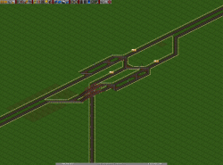
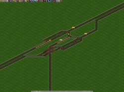
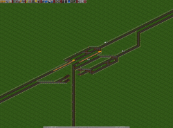
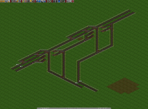
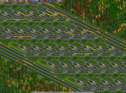
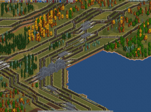

Joining, merging, balancing, chosing…
…All comes down to the same thing. There is a lot of confusion regarding these terms and they are ofter misunderstood or mis-interpreted. It basically comes down to this: whenever a track (be it a ML/SL/Station Branch) joins the ML, you want trains on the joining track to be able to join every ML. In the following article I will try to explain why this is so important to the network and I’ll also try to clear out some on the misunderstandings about the concept.
Problem & Solution
In our games, especially in the later stages, it often happens that some ML’s have a higher load than others,
this is no problem until you want to join two mainlines that are both over 50% loaded, obviously this will cause problems at the merge. In these situations you want the high density joining ML to be able to pick from different outgoing mainlines instead of only the full one. Enter: balancing.
Balancing
I’m the first to admit this term is confusing, it suggests you want a construction that divides the load equally over the tracks. This is not true. The definition of “balancing” is the same as mentioned in the introduction; you want every incoming track to be able to join every outgoing, to avoid bottlenecks at joins. I’ve heard the sentence “I don’t have to balance this join, it is balanced already” way to often, this assumption is absolutely false. Another common false sentence: “I don’t need prios at ML-to-ML joins, as the tracks are equal in priority”. This brings me to the main purpose of this article.
ML-to-ML merging
Game 160 was a nice example why ML merges are such a crucial part of any coop-network; in this game we had full tracks next to empty ones and tens of trains lined up to join the already-full tracks. I hope I made clear what balancing really means by now and why it is so important, now let’s get down to the more fun stuff: building.
Blocking 
Have a look at the image below.

In the image you can see a pretty common balancer, however, it has a major flaw: it can be blocked, which can cause serious problems on a fully loaded network. Blocking happens when a train is already on its way to join the ML, but while it’s between the entry and combo signal a train on the ML enters the prio section and stops the joining train, which will then block the entire balancer. This situation is shown on the image below. 

To stop the balancer from blocking you should make sure that a train can be blocked at any point without holding up any other trains behind it. A simple non-blocking balancer is shown below. 

Multi-ML to Multi-ML 
In coop games we rarely have 2+1 to 2 joins as the one shown above, 2+2 to 2 are much more common. Of course the easy way is to just copy the non-blocking join for every incoming ML:

Or worse: 

Apart from just being plain ugly this kind of join has more downsides. In the first example ML3 joins first, when there is only traffic from ML1 and ML2 on the tracks, by the time ML4 trains get to join there is also the added load from ML3, giving an unfair disadvantage. This issue increases exponentially when it gets bigger, as seen in the second image. It can be taken out by inserting a crossover (non-blocking, of course) before the actual join.


This method takes out the unfairness, makes better use of the space and adds much more nice tracks and complexness, which #openttdcoop is all about, after all. The cross-over style join is pretty scalable and flexible and can also be used for wider mainlines, as shown in the 3+3 to 3 joiner below. 

The examples and situations shown are in no way optimal and you should not just copy them and drop in to whatever place seems suitable, every game is different and every join should be tuned to its location, I just hope I clarified the concept and gave you some inspiration to use in your own constructions.
Categories: Community News
Thraxian October 5, 2009 21:16
Nice article, Mark. I’d also like to point out that it is often advantageous to give priority to FULL trains over EMPTY ones. For instance, when trains are leaving a factory, let the full goods trains get priority over the empty grain/livestock/steel ones. Those goods make a lot more money if they get to their destination in a timely manner, where the other trains don’t make anything on the return trip!
bwong December 4, 2009 17:33
Really good article, but I have a question, do you have any mainline to sideline junctions that involves having the mainline maintain with 4 tracks and the sideline with 2 tracks
Mark December 10, 2009 15:15
Something like http://wiki.openttdcoop.org/images/7/76/4plus2to4.png should do that job pretty well. Optionally you could have non-blocking crossovers instead of the PBS crosses to get a slight capacity increase.